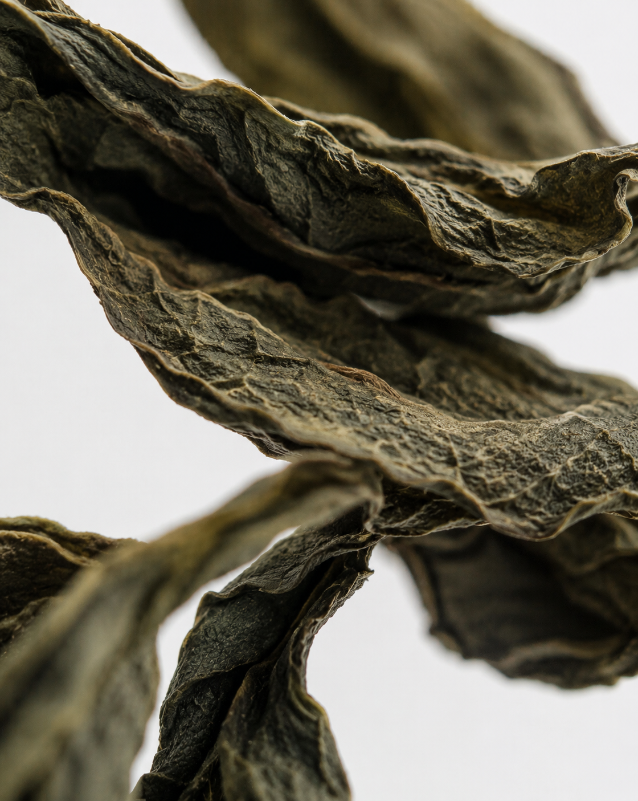

Wastea®
— No. 01 / 04
2026 · LDN
No. 01
Recovered leaves.
No. 02
Processed into fibre.
No. 03
Developed into a material surface.
No. 04
Designed for everyday objects.
— LOT 04 / 24 · WASTEA®
@OLIVERCO.LDN